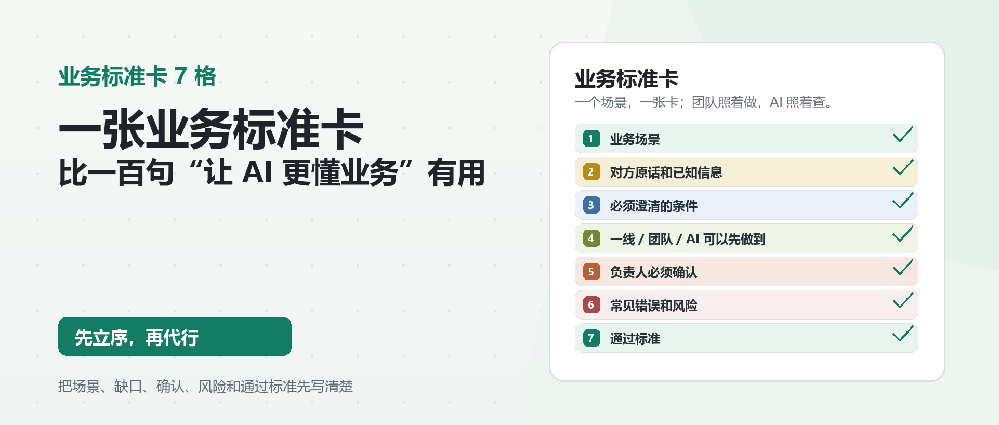

Git 审稿辅助，不会复制到公众号后台
article_id: wechat-007-business-standard-card / status: draft_v1 / cover: 1922x818 / inline images: not needed for first publish

很多人做 AI 落地，第一句话就是：
“怎么让 AI 更懂我们的业务？”
我现在听到这句话，会先反问一句：
你们自己有没有一张卡，能把这个业务场景讲清楚？
不是一本厚厚的 SOP。
也不是一堆聊天记录、报价表、流程截图、内部文档。
而是一张很小的业务标准卡。
只针对一个具体场景，说清楚：
这个问题发生在什么业务里，对方原话是什么，已知信息有哪些，哪些条件必须补齐，哪些事一线可以先做，哪些事必须负责人确认，常见错误是什么，做到什么程度才算通过。
如果这张卡没有，AI 很难真正“懂业务”。
它最多是更会说话。
它可以把话说得完整一点，礼貌一点，像那么回事一点。
但到了业务现场，真正决定结果的，往往不是一句话写得好不好，而是有没有把判断条件拆清楚。
不是 AI 不懂，是业务标准没有被写出来
这段时间我一直在准备线下分享，主题是：
用 Codex 把业务经验变成团队能力。
我越准备，越觉得很多公司做 AI 的卡点，不在工具。
工具当然重要。
但更早的卡点是：业务经验没有被拆成团队能复用的标准。
比如客户发来一句：
“这个能走吗？”
一线新人可能马上去问老员工。
老员工可能凭经验知道要问品名、重量、尺寸、目的地、是否带电、是否敏感货、有没有资料。
AI 也可能给出一段看起来不错的回复。
但问题是：
这些判断条件有没有固定下来？
新人下次能不能照着做？
AI 输出以后，谁知道它漏了什么？
负责人复核时，是靠感觉看一眼，还是有一张标准卡可以对照？
如果这些都没有，AI 接进去以后，只是把原来靠人临时判断的地方，变成了“AI 也跟着临时判断”。
速度可能快了。
风险也可能一起快了。
我说的业务标准卡，不是大系统
很多小团队一听“标准化”，就想到大项目。
流程梳理、系统上线、知识库建设、权限配置、培训手册。
这些东西不是不重要，但一上来就做，很容易变成另一个负担。
我更建议先做一张卡。
一个业务场景，一张卡。
比如：
- 客户问“这个能不能走？”
- 客户问“多少钱？”
- 客户只发来一张运价截图。
- 新人要回复客户询盘。
- 业务要把客户需求交给操作。
- 提单草稿要做第一轮核对。
每个场景都不大。
但每个场景里，都藏着判断条件、责任边界和风险点。
把这些拆清楚，才是 AI 能介入的前提。
一张业务标准卡，我建议先写 7 格。
第一格：业务场景
先不要急着写答案。
先写清楚这是哪个场景。
比如：
客户询问某票货是否能走。
或者：
客户提供部分信息，要求业务先报一个大概价格。
这一格看起来简单，但很关键。
因为很多混乱，都是从场景没说清开始的。
同样一句“这个能走吗”，在不同场景里，含义不一样。
可能是问渠道能不能接。
可能是问品名有没有限制。
可能是问资料是否齐全。
可能是问时效能不能满足。
也可能是客户已经准备下单，只差你一句确认。
场景不同，AI 能做的动作不同，负责人要确认的地方也不同。
第一格不是写给 AI 看。
是写给团队看：我们现在讨论的到底是哪类业务动作。
第二格：对方原话和已知信息
很多人整理业务需求时，喜欢把客户原话“润色”一下。
我反而建议先保留原话。
比如客户说：
这个到洛杉矶多少钱？有点急。
不要一上来就改成：
客户咨询美国洛杉矶运输价格，并有时效要求。
这个改写不是错，但会丢掉现场信息。
“有点急”到底多急？
“到洛杉矶”是港口、仓库、门点，还是客户随口一说？
客户没说品名、重量、尺寸、件数、服务类型，这些都要保留为缺口。
所以第二格要写两部分：
- 对方原话；
- 已知信息。
这一步的价值，是把输入固定下来。
AI 后面可以帮你整理、提取、转成表格，但不能把原始输入抹掉。
如果原话没留住，后面谁也说不清判断是怎么来的。
第三格：必须澄清的条件
这一格是业务标准卡的核心。
很多 AI 回复看起来不靠谱，不是因为它不会写，而是因为它不知道哪些条件不能猜。
在货代场景里，客户问能不能走，至少可能要澄清：
- 品名是什么；
- 重量、尺寸、件数是多少；
- 起运地和目的地具体到哪里；
- 是海运、空运、快递还是其他渠道；
- 是否带电、带磁、液体、粉末或敏感货；
- 是否有 MSDS、危包证、报关资料等必要文件；
- 客户要的是价格、可行性、时效，还是正式承诺。
不同业务不一定用这些字段。
但每个团队都应该有自己的“必须澄清条件”。
这一格写不清楚，AI 再强也只能猜。
新人也只能猜。
老员工也只能一遍遍补位。
所以我常说，真正要沉淀的不是一句标准回复，而是这类问题背后的判断条件。
第四格：一线 / 团队 / AI 可以先做到什么
这一格要把“可以先做的事”写清楚。
不是所有动作都要等负责人。
也不是所有动作都能交给 AI。
比如客户信息不完整时，一线可以先做：
- 把已知信息整理成字段；
- 列出缺失条件；
- 按公司话术起草一段补充询问；
- 标记哪些地方涉及价格、时效、承诺；
- 把问题转给对应负责人确认。
AI 可以先做：
- 从客户原话里提取字段；
- 生成待确认清单；
- 检查前后信息是否矛盾；
- 起草内部说明或客户回复草稿；
- 提醒哪些话不能直接承诺。
团队可以先做：
- 把信息放进表格；
- 建一个待办；
- 让负责人看到上下文；
- 留下来源、编辑人、确认人和时间。
这一格的意义，是让 AI 进入工作流，而不是停在聊天框里。
AI 输出一段话没有用。
能进入表格、待办、审核和交接，才开始有用。
第五格：负责人必须确认什么
业务标准卡最重要的价值之一，是告诉 AI 和新人什么时候必须停。
比如：
- 能不能正式报价；
- 价格和有效期能不能对外发；
- 这个品名能不能接；
- 这个资料是否足够订舱或申报；
- 提单字段能不能确认；
- 客户承诺能不能写进回复。
这些动作不能因为 AI 写得顺，就自动继续。
负责人确认，不是形式主义。
它代表责任。
AI 可以起草。
一线可以整理。
系统可以提醒。
但正式报价、关键承诺、责任边界、对外确认，必须有人负责。
这一格如果不写清楚，团队很容易把“AI 帮我写了一段回复”，误当成“这件事已经可以发给客户”。
这就是风险。
第六格：常见错误和风险
每个业务场景都应该有自己的常见错误。
不要写得太空。
比如不要只写：
注意风险。
要写具体一点：
- 把目的地城市当成具体派送地址；
- 客户没给重量尺寸就先报大概价；
- 把历史运价截图当成当前有效价格；
- 忘记确认有效期和附加费；
- 没确认货物属性就默认普通货；
- 把内部判断直接发给客户；
- AI 草稿里出现了超过公司授权的承诺。
这些错误都不是技术问题。
它们是业务现场里经常发生的判断偏差。
AI 接入以后，如果没有这一格，它也可能重复这些错误。
甚至因为语言更完整，让错误看起来更像真的。
所以风险不是写在最后吓人的。
风险要写进标准卡里，让新人和 AI 每次都能对照。
第七格：通过标准
最后一格，写清楚做到什么程度才算通过。
不要把“AI 回答了”当成通过。
也不要把“客户有回复了”当成通过。
一个场景的通过标准可以是：
- 对方原话已保留；
- 已知信息已拆成字段；
- 缺失条件已列出；
- AI 只生成草稿，没有直接承诺；
- 涉及价格、时效、能否承接的地方已标记为负责人确认；
- 对外回复前有人工复核；
- 最终回复能追溯到原始输入和确认人。
这才叫通过。
通过标准不是为了让流程变慢。
它是为了让团队知道：这件事不是“看起来处理了”，而是真的到了可以进入下一步的程度。
一个轻量示例
如果把这 7 格放到一个很小的业务场景里，大概是这样：
业务场景： 客户问“这个能走吗？” 对方原话和已知信息： 客户只发来一句“这个能走吗”，暂时没有完整资料。 必须澄清的条件： 品名、重量、尺寸、件数、起运地、目的地、运输方式、是否带电 / 敏感、是否有必要资料。 一线 / 团队 / AI 可以先做到： 整理已知字段，列出缺失条件，起草补充询问，不对可承接性做最终承诺。 负责人必须确认： 这类货是否能接、走哪个渠道、是否需要额外资料、能不能对客户给出明确承诺。 常见错误和风险： 客户资料不全就直接说“可以走”；把历史经验当成当前规则；AI 草稿里写出超过授权的话。 通过标准： 缺失条件已列清，补充询问已发出或待发，涉及能否承接的判断已标记给负责人确认。
这张卡不解决所有问题。
但它能让团队从“凭感觉处理”变成“照标准推进”。
对新人来说，它知道下一步该问什么。
对 AI 来说，它知道哪些地方不能猜。
对负责人来说，它知道自己要确认什么，而不是从一大段聊天里重新找重点。
这张卡怎么和 Codex / AI 配合
有了这张业务标准卡，Codex 或其他 AI 工具能做的事就清楚多了。
它可以把客户原话转成字段。
它可以检查缺失条件。
它可以根据第四格生成一线可以先做的动作。
它可以根据第五格标记必须负责人确认的事项。
它可以根据第六格做风险提醒。
它也可以根据第七格判断这次处理是否还差一步。
但这里有个前提：
标准必须先由人立起来。
AI 不应该替公司发明业务边界。
它可以帮你整理边界、执行边界、检查边界，但不能替你定义边界。
这也是我为什么不建议小团队一上来就做大知识库。
知识库很容易变成资料堆。
业务标准卡更小，但更容易落地。
一个场景写一张。
写完就能给新人看，也能给 AI 用，还能给负责人做复核依据。
写在最后
今天这篇文章，其实只想讲一个很小的动作。
不要再只说“让 AI 更懂业务”。
先写一张业务标准卡。
把一个具体场景里的原话、字段、缺口、动作、确认、风险、通过标准拆出来。
这张卡不复杂。
但它能让团队少一点靠记忆，少一点靠临时问人，少一点靠 AI 自己猜。
它也能让老板看清楚：
哪些经验已经可以交给团队复用，哪些经验还只是老员工脑子里的感觉。
线下分享也好，AI 项目也好，真正要交付的不是一套漂亮工具。
而是把业务经验变成团队可以执行、可以复核、可以交接的能力。
先立序，再代行。